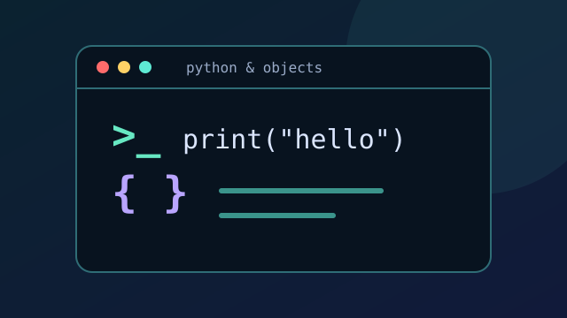

01 / WEB
Osobní stránka
Sémantické HTML, responzivní CSS a JavaScript pro scrollové efekty, filtry a přístupnost.
- HTML
- CSS
- JS
Student IT, který se učí každý den.
whoami
Student IT, kterého zajímá všechno od webu přes backend až po data. Učím se, tvořím a hledám první příležitost, kde můžu kód posunout dál.
01 // O MNĚ
Jsem Kryštof Dopita a jsem student, který se v IT orientuje v šířku. Láká mě web, backend i práce s daty — jednoduše vše, co se dá z nápadu postavit na funkční řešení.
Každý projekt pro mě znamená novou věc, kterou si odnesu. Teď buduji základy, zkouším školní projekty a hledám příležitost, kde se můžu dál učit od zkušenějších.
02 // PROJEKTY
Tři ukázky toho, co už jsem postavil — od osobní stránky po hry v Javě.
Sémantické HTML, responzivní CSS a JavaScript pro scrollové efekty, filtry a přístupnost.

2D hra v Javě: prozkoumávání místností, sbírání klíčů, odemykání budov a pasti.

Textové dobrodružství v konzoli: neznámý svět, předměty, nepřátelé a příběh krále.
03 // DOVEDNOSTI
Základy, na kterých stavím — od rozvržení stránky přes programovací jazyky až po práci s daty.
| Dovednost | Úroveň |
|---|---|
| HTML, CSS a JavaScript | Pracuji na této stránce, průběžně se zdokonaluji |
| Python | Základy, jednoduché skripty a automatizace |
| Java a C# | Objektové myšlení, školní projekty a hry |
| SQL a databáze | Základy dotazů, návrhu tabulek a vztahů |
04 // GITHUB
Klikni na kartu nebo ji projdi klávesnicí — rozbalí se detail a spustí se krátká animace. Štítky nahoře fungují jako filtr.
Zobrazeny 3 projekty.
Aktuální osobní stránka: sémantické HTML, responzivní CSS a JavaScript pro scrollové efekty.
Otevřít repozitářEscape from the Island — 2D hra, ve které prozkoumáváš místnosti, sbíráš klíče, odemykáš budovy a unikáš z ostrova.
Otevřít repozitářLETHE — textové dobrodružství v konzoli: prozkoumáváš neznámý svět, sbíráš předměty a bojuješ s nepřáteli.
Otevřít repozitář05 // KONTAKT
Jsem student začátečník a rád se potkám nad kódem. Napiš mi, máš-li nápad, zpětnou vazbu nebo jen chceš říct ahoj.
krystofkolumbus99@gmail.com github.com/krystofdopita